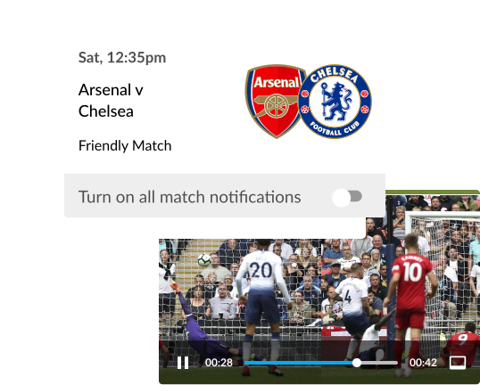

Get a personalized football
experience tailored just for you
Achieve super-fan status by getting tailored updates and
up-to-the-minute information on your team.

WHAT IT DOES
An Enhanced Football Experience
The Guardian Live Scores app is your go to app for
live scores and watching Premier League goals… Get in there,
what a result!
As well as videos of all the goals, you can watch match
highlights, check out the latest scores and results and stay
bang-up-to-date with the big football stories from The
Guardian publication.
Learn more
GET STARTED
User-friendly Interface
The in-game goal clips from every Premier League match are
available to Guardian TV customers with a Guardian subscription.
So, if you’re not a subscriber, now’s the time to make that savvy call.
If that’s a step too far for you, you can still watch loads of firecracker
Premier League action as long as you sign in with a free Guardian iD.
Learn more
Features That Will Tailor Your Experience
Video highlights for every Premier League and English Football League game
Notifications for your teams, including in-game goal clips and Premier League match highlights for Sky TV subscribers with Guardian.
Brand new video section including dedicated areas for your chosen team, trending video, Premier League, Football league and other major leagues
Match pages showing live scores, commentary, team line-ups and enhanced match stats to keep you up-to-date on all the action
The new picture in picture video mode means you can watch goals, manager interviews and more whilst using other areas of the app – so you don’t need to miss any of the action
Live updated league tables including all the domestic, European and major leagues and tournaments
The Guardian News Vidiprinter. Follow the goals as they go in with our new and improved Vidiprinter
Match reports, previews and a dedicated news section
And you can achieve super-fan status by personalising your home page with up-to-the-minute information on your team.
Get Up Close With Your Team
If you’re interested in the scores of more than one team (it’s OK, we won’t
tell your mates you support two clubs!), you can choose the scores and
competitions that matter to you using the ‘My Scores’ section. So, make sure
you’re a top-flight football fan by downloading the Football Score Centre
now. It’s got all this: